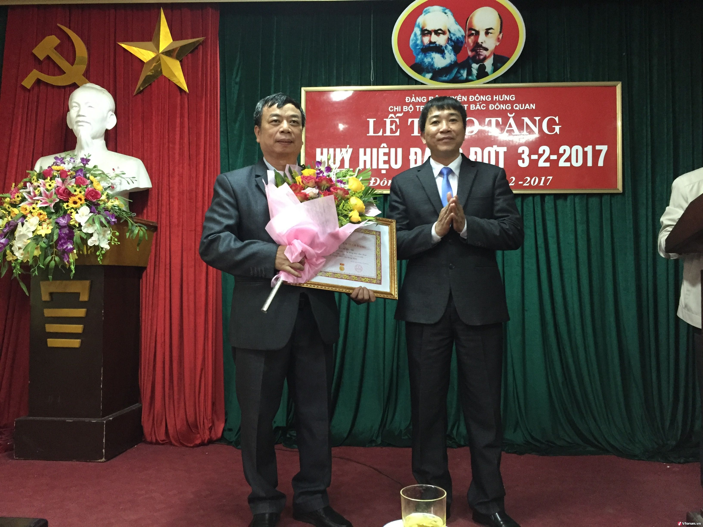

LỄ TRAO TẶNG HUY HIỆU 30 NĂM TUỔI ĐẢNG, ĐỢT 3/6/2019
Chiều ngày 3/2/2017 Chi bộ Đảng Trường THPT Bắc Đông Quan long trọng tổ chức Lễ trao tặng Huy hiệu 30 năm tuổi Đảng năm 2017.
Đến dự buổi lễ, về phía Huyện ủy có đồng chí Nguyễn Duy Tùng - Ủy Viên ban thường vụ Huyện ủy – Phó chủ tịch hội đồng nhân dân huyện Đông Hưng.
Tham dự buổi lễ có đồng chí Phan Văn Đức – Bí thư chi bộ - Hiệu trưởng nhà trường; các đồng chí trong ban Chi ủy, Ban Giám hiệu, Ban chấp hành Công đoàn, BCH Đoàn trường, các đồng chí đảng viên của chi bộ, và đồng chí Nguyễn Chí Thành – Đảng viên vinh dự được trao tặng huy hiệu 30 năm tuổi Đảng.
Được Đảng trao tặng Huy hiệu 30 năm tuổi Đảng không chỉ là niềm vinh dự, tự hào của mỗi cá nhân mà còn là niềm vinh dự của Chi bộ nhà trường. Đây là phần thưởng cao quý của Đảng, ghi nhận những đóng góp của mỗi Đảng viên đối với sự nghiệp cách mạng của Đảng và dân tộc nói chung và với với sự nghiệp giáo dục của Nhà Trường nói riêng.
Tại buổi lễ, đồng chí Nguyễn Duy Tùng - Ủy Viên ban thường vụ Huyện ủy – Phó chủ tịch hội đồng nhân dân huyện Đông Hưng đã trao Huy hiệu 30 năm tuổi Đảng cho đồng chí Nguyễn Chí Thành và chúc mừng đồng chí, Đó là sự ghi nhận của Đảng về quá trình phấn đấu, rèn luyện liên tục trong suốt thời gian qua đối với đồng chí Nguyễn Chí Thành.
Thay mặt cho Chi bộ Đảng nhà trường, đồng chí Phan Văn Đức – Bí thư chi bộ - Hiệu trưởng nhà trường đã tặng hoa chúc mừng đồng chí Nguyễn Chí Thành và mong muốn đồng chí tiếp tục cống hiến, phấn đấu, hoàn thành tốt nhiệm vụ trên cương vị được giao, đóng góp nhiều hơn nữa cho nhà trường, cho nhân dân, cho Đảng, cho Nhà nước.
Trong niềm xúc động, đồng chí Nguyễn Chí Thành gửi lời cảm ơn tới Chi bộ, Ban giám hiệu nhà trường đã luôn giúp đỡ, động viên để đồng chí hoàn thành tốt nhiệm vụ của người Đảng viên. Đồng thời hứa quyết tâm sẽ tiếp tục cống hiến, phấn đấu xây dựng tổ chức Đảng, Nhà trường trong sạch, vững mạnh hoàn thành xuất sắc nhiệm vụ trong những năm tiếp theo.
